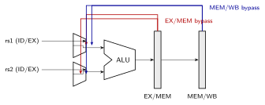

A pipeline overlaps instructions across stages. It can shorten the clock period and approach one completed instruction per cycle after filling; imbalance, register overhead, and hazards limit the gain.
Single-cycle. Every instruction fetches, decodes,
executes, accesses memory, and writes back in one long combinational
pass; the clock period must cover the slowest instruction. Budget for
lw (the critical path):
| Element | Delay |
|---|---|
| I-mem read | 250 ps |
| register file read | 150 ps |
| ALU (address) | 200 ps |
| D-mem read | 250 ps |
| register file write | 150 ps |
| Total () | 1000 ps |
In this simplified budget, an R-type path takes 750 ps but still uses the 1000 ps single-cycle clock.
Multicycle. Break execution into steps (one per cycle), so shrinks to the slowest step and each instruction takes only the cycles it needs (3-5). Hardware is reused across steps, but CPI rises to ~4 and the machine still runs one instruction at a time.
Pipelined. Keep the multicycle stage boundaries but start a new instruction every cycle. Ideal CPI is 1. For the stage delays above, ps, plus pipeline-register overhead. Dividing total delay by five would incorrectly assume balanced stages.
The datapath contains PC, register file, ALU, memories, and routing muxes. The controller decodes the instruction and enables only its intended state changes. For a small RV32I subset:
| Instruction | ALU inputs/work | Memory action | Register writeback | Next PC |
|---|---|---|---|---|
add |
rs1 + rs2 | none | ALU result | PC + 4 |
lw |
rs1 + immediate | read word | loaded value | PC + 4 |
sw |
rs1 + immediate | write rs2 | none | PC + 4 |
beq |
compare rs1, rs2 | none | none | PC + offset if equal; else PC + 4 |
Branch-target addition needs an adder or a separate step when the main ALU is busy comparing. Single-cycle control is combinational decode; multicycle control uses an FSM to sequence shared resources. Pipeline control travels with the instruction: destination register, write enables, branch information, and valid state must remain aligned with its data.
A stall holds selected pipeline registers; a flush invalidates younger work. Invalid entries must not write registers, memory, or other architectural state.
| Stage | Work | For lw x1, 8(x2) |
|---|---|---|
| IF | fetch instruction at PC, PC+4 | read I-mem |
| ID | decode, read register file | read x2 |
| EX | ALU operation | compute x2+8 |
| MEM | data memory access | read D-mem |
| WB | write result to register file | write x1 |
The shaded pipeline registers (IF/ID, ID/EX, EX/MEM, MEM/WB) are ordinary edge-triggered registers from Sequential Circuits; they carry each instruction’s data and control signals down the pipe, so five instructions coexist, one per stage. Control is decoded once in ID and travels with the instruction.
Name signals by stage
The stage-naming discipline from
Synthesis,
Timing and Power’s pipelined adder (a_r[i], one name
per stage copy) is exactly how the Wally core writes an entire
processor: InstrD, PCE, StallM,
every signal suffixed with its stage letter. A pipeline diagram and a
naming convention are the same idea.
Pipelining arithmetic. For instructions on a -stage pipeline: cycles (fill and drain cost ). Ignoring hazards, speedup is . It approaches only with perfectly balanced stages and no register overhead:
A hazard is a situation where the next instruction cannot safely execute in its scheduled cycle.
Structural: two instructions need the same hardware in the same cycle. A single unified memory would collide IF (instruction fetch) with MEM (load/store) every load; split I/D memories or caches (the modified Harvard organization in History of Computing) remove it. The register file is read in ID and written in WB in the same cycle; a write-first register file or explicit WB-to-ID bypass permits same-cycle use and shortens the RAW distance by one.
Data: an instruction needs a value that an older, still-in-flight instruction has not yet written (read-after-write, RAW). Write-after-read and write-after-write cannot happen in this in-order 5-stage pipe (all writes are in WB, in order); they become real in Out of Order Execution and Register Renaming.
Control: the next PC depends on a branch that has not resolved.
add x1, x2, x3 # x1 written in WB (cycle 5)
sub x4, x1, x5 # x1 needed in ID (cycle 3) without forwarding; EX is cycle 4Interlock (stall). Hazard-detection logic in ID
compares the source registers rs1/rs2 against
destination registers in flight (ID/EX, EX/MEM). Ignoring unused source
fields and writes to x0, it freezes PC and IF/ID and
injects a bubble (a NOP’s control signals) into ID/EX. Correct but slow:
two bubbles for the case above.
Forwarding (bypassing). The value exists in the datapath (ALU output at end of EX) long before WB writes it. Route it back:

Muxes at the ALU inputs select among the register-file value, the
EX/MEM result, and the MEM/WB result; the forwarding unit picks the
youngest matching producer (EX/MEM has priority over MEM/WB),
ignoring x0. With full forwarding, back-to-back ALU
dependences cost zero cycles.
The load-use hazard survives forwarding. A load’s data appears at the end of MEM, but a dependent instruction in the next slot needs it at the start of its EX, one stage earlier. In this timing model, the immediately dependent EX operation needs one bubble:
Scheduling independent work after a load can hide the load-use delay. Otherwise the interlock stalls; an architecturally exposed load-delay slot instead makes scheduling part of the ISA contract.
Forwarding cannot supply data before it exists. The bubble depends on this pipeline’s load and consumer timing; other organizations can have different load-use penalties. Store-data forwarding also needs its own path.
The branch outcome (beq compare) and target are known in
EX (cycle 3), but IF needed the next PC in cycle 2. Naively every taken
branch costs 2 bubbles (with branch resolution in EX; 3 stages of fetch
are wrong if resolved in MEM).
Mitigations, in increasing effectiveness:
Effective CPI example: 20% of instructions are branches, 60% taken, 2-cycle taken penalty, plus load-use stalls on 25% of the 25% that are loads:
With the 250 ps stage limit above and no register overhead, speedup is . Register overhead reduces it further.
Depth trades shorter combinational stages against register overhead, forwarding complexity, and recovery latency. Two-stage microcontrollers and deep application cores make different choices. Compare cores only with their configuration, memory interface, and definition of “branch penalty” specified.
A page fault in MEM, an illegal opcode in ID, and an external interrupt can all be pending at once, in different stages. The pipeline handles this by recording faults and deferring architectural effects: fault flags ride the pipeline registers and are honored only at the commit point, giving precise state. Mechanics are in Exceptions.
Author: Sai Govardhan (saigov14@gmail.com)
License: MIT.